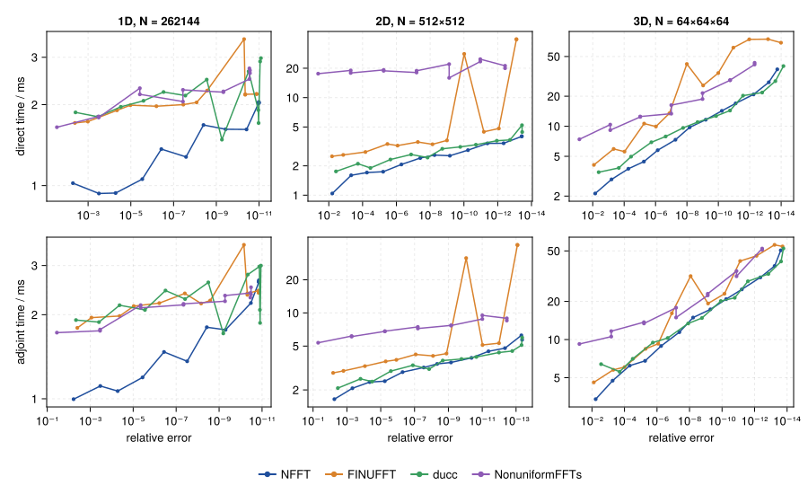
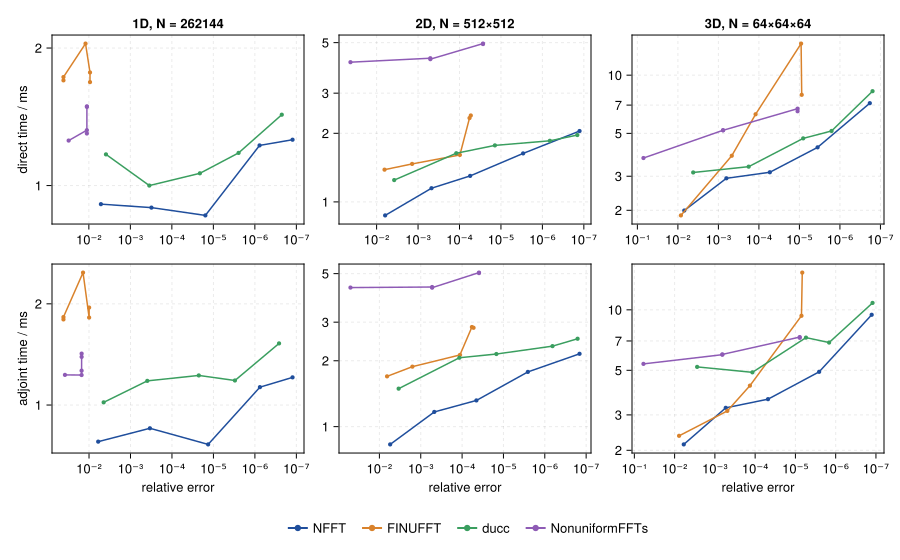
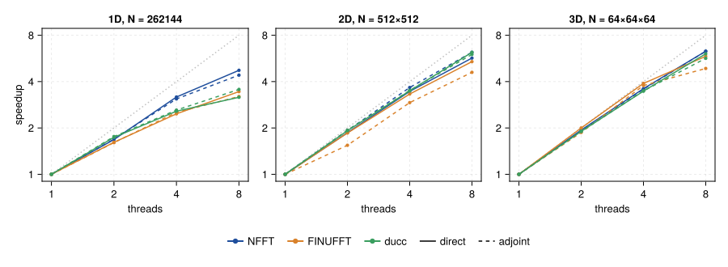
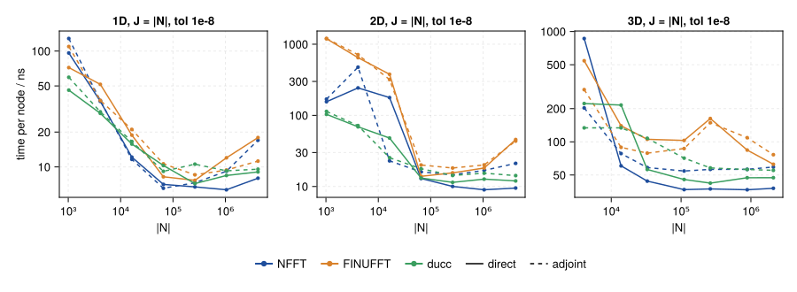
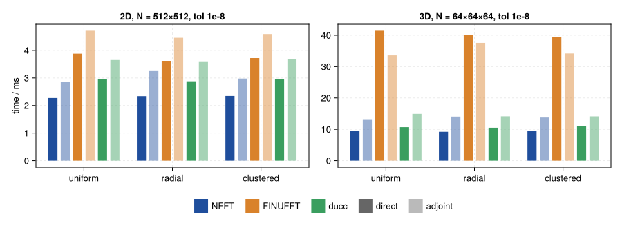
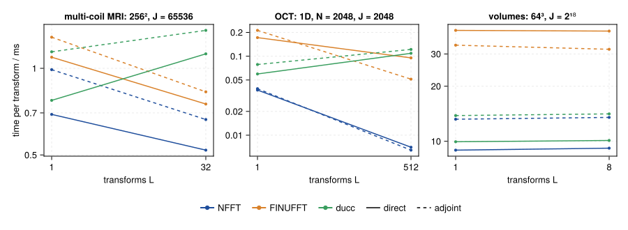
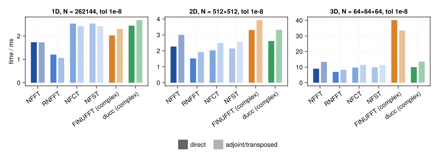
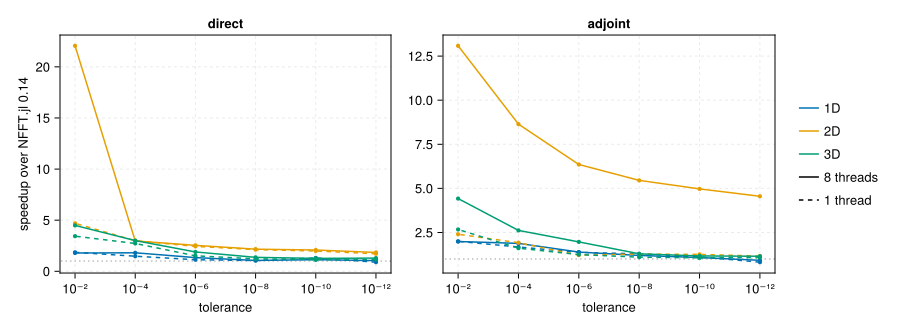

Performance
NFFT.jl is compared with FINUFFT, ducc, NonuniformFFTs.jl and its previous version 0.14. All numbers on this page come from the benchmark suite in benchmark/ of the repository and can be reproduced with it (see Reproducing).
Setup of the figures: Apple M1 Max, 8 threads (performance cores), Julia 1.13; FINUFFT and ducc built from their main branches with native CPU flags; FFTW plans with ESTIMATE. Unless stated otherwise $J = |\bm{N}| = 2^{18}$ uniformly random nodes, $\bm{N} = 2^{18}$, $512^2$, $64^3$, double precision. NonuniformFFTs.jl has no tolerance parameter; its kernel width is derived from the tolerance as in NFFT.jl 0.14.
Time against accuracy
The libraries interpret their tolerance parameters differently, so they are compared at equal measured error. Each point is one tolerance of a sweep from $10^{-2}$ to $10^{-14}$ (single precision: $10^{-6}$); further right means more accurate, lower means faster.

- 1D: NFFT.jl is the fastest library at every accuracy, 1.4–2× ahead of FINUFFT and ducc.
- 2D: NFFT.jl and ducc are within 10 % of each other (NFFT.jl ahead at low accuracy), FINUFFT is 1.2–1.6× slower.
- 3D: NFFT.jl and ducc are on par; FINUFFT is up to 4.5× slower for the direct transform.

In single precision NFFT.jl is 1.2–1.8× faster than ducc in every dimension. FINUFFT cannot reach small errors in single precision for these sizes (its tolerance floor grows with $N$; in 1D it rejects even $10^{-2}$).
Threads
Speedup over one thread at a tolerance of $10^{-8}$ (solid: direct, dashed: adjoint; dotted: ideal).

With 8 threads NFFT.jl reaches a speedup of 4.4–4.7 in 1D, 5.7–6.2 in 2D and 6.3 in 3D; ducc and FINUFFT scale similarly in 2D and 3D and less in 1D (3.2–3.6).
Problem size
Time per node for $J = |\bm{N}|$ uniformly random nodes at a tolerance of $10^{-8}$.

For large problems the time per node is 7–10 ns in 1D and 2D and about 30 ns (direct) and 55 ns (adjoint) in 3D. Below about $10^4$ nodes the fixed costs of the threaded stages dominate; there NFFT.jl is slower than ducc in 2D and 3D.
Node distributions
Uniformly random nodes, radial spokes through the centre (as in MRI) and nodes clustered in the centre (normal distribution), tolerance $10^{-8}$. Solid bars: direct transform, light bars: adjoint.

The distribution of the nodes hardly matters for any of the libraries.
Many transforms with the same nodes
Time per transform for $L$ transforms with the same nodes (dims, FINUFFT's ntrans; ducc loops over the transforms), tolerance $10^{-8}$.

Transforms with the same nodes share the window evaluation. For many short 1D transforms (OCT: 512 A-scans) NFFT.jl runs the transforms in parallel on single-threaded copies of the plan and needs 7 µs per transform, 13–15× less than FINUFFT and ducc. For multi-coil MRI it is 1.1–2× faster than the others, for volumes on par with ducc.
Real data
The RNFFT (real values at the nodes), the NFCT and the NFST against the complex NFFT of the same size, tolerance $10^{-8}$.

The RNFFT computes on a real grid and needs about 60 % of the time of the complex NFFT. NFCT and NFST cost about as much as the complex NFFT in 2D and 3D; in 1D they are still slower.
NFFT.jl 1.0 against 0.14

Speedup of NFFT.jl 1.0 over 0.14 at the same requested tolerance, with 1 thread (dashed) and 8 threads (solid). NFFT.jl 0.14 misses its tolerance by a factor of 3–4 (e.g. $3.5·10^{-4}$ for $10^{-4}$), so at equal error the speedups are larger. The large factors in 2D with 8 threads come from FFTW's slow threaded ESTIMATE plans that 0.14 used.
Explorer
All measurements of this page. Choose a suite, the quantity on the y axis and the parameters; hovering a point shows the details (including the window width $W$ and oversampling factor $σ$ NFFT.jl chose).
Reproducing
julia benchmark/bench.jl run fast # ≈ 15 s, NFFT.jl alone
julia benchmark/bench.jl run quick # ≈ 1 min, NFFT.jl, FINUFFT and ducc
julia benchmark/bench.jl run all --save # all suites of this page, ≈ 15 min
julia benchmark/bench.jl report # figures and explorer data
julia benchmark/bench.jl ab v1.0.0 # the working tree against a releaseEach library runs in its own process and environment, with its default parameters apart from the tolerance and the number of threads. The error is the relative $\ell^2$ error against the exact NDFT on 64 sampled outputs, the time the minimum over repeated calls of a precomputed plan. Details in benchmark/README.md.